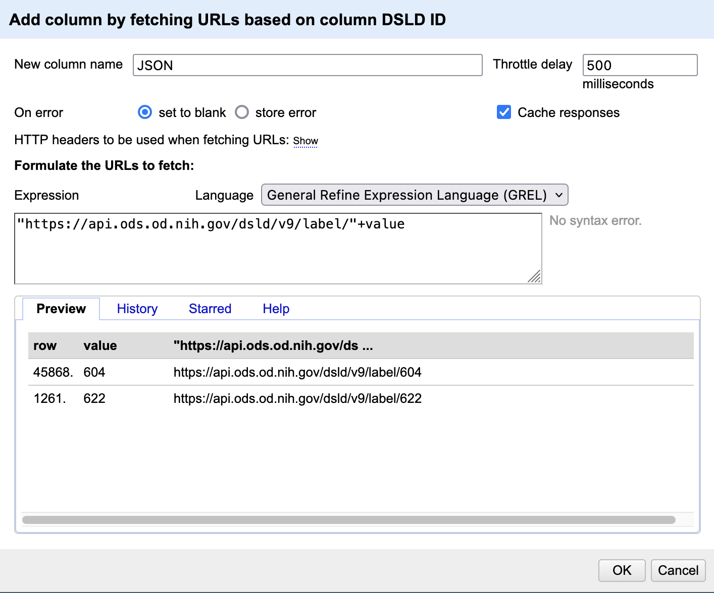
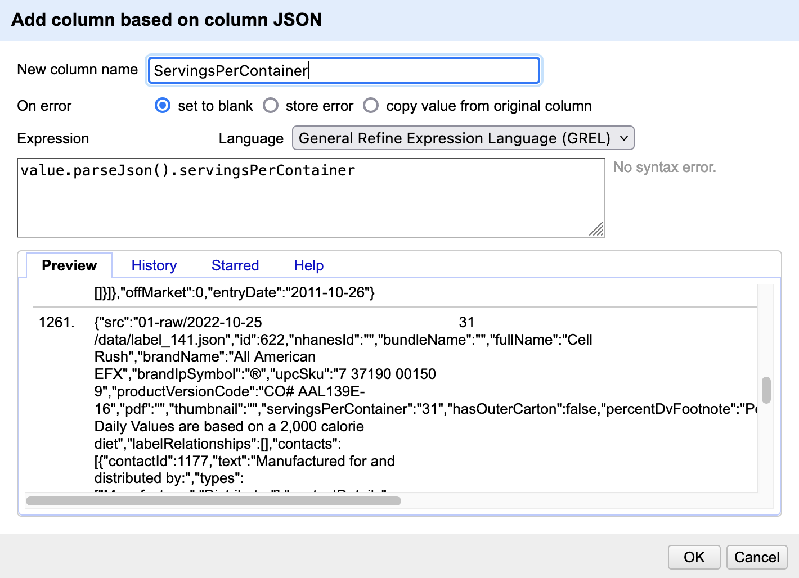
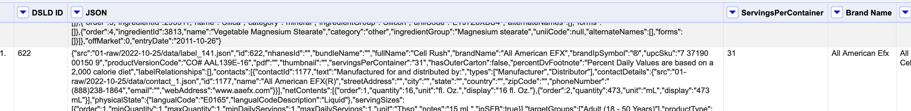

Chapter 4 Advanced OpenRefine
In addition to the basic data cleaning features, OpenRefine has a variety of advanced features. Here we will go over how to pull in data from external sources and add it to our spreadsheet. To learn more about other advanced features, check out the Recommended Resources page.
4.1 Pulling data from an API
Our current spreadsheet is missing some data about the tracking history of these products. Luckily, this data is available in the National Library of Medicine’s Dietary Supplements Label Database and we can access it via an application programming interface (API). To learn more about this particular database and API you can visit the website.
- Before we add a bunch of new data, let’s test our script on a couple of records. Go ahead and star two records using the little star icon on the far left of each record.
- Then, under
All>Facet>Facet by starand selectTRUEin the facet box on the left. Now we can work with these two records.
- Then, under
- Now we want to pull new data from the database using the
DSLD IDnumber. Under theDSLD IDcolumn select >Edit column>Add column by fetching URLs- In the box enter:
"https://api.ods.od.nih.gov/dsld/v9/label/"+valuethis is the URL of the API plus a stand-in for the ID number (the+value). You should see a preview of the URL with the ID at the end.
- In the box enter:

- Name the new column
JSONand hitOK. It might take a minute or so to load but eventually we should get a new column calledJSONwith a (huge) paragraph of text in JSON format.
4.2 Extracting the Data
- JSON, or JavaScript Object Notation is a text format for storing and sharing data, often in lists or dictionaries. We basically asked the NLM database to send us all the info they have for this ID. Now we need to extract the info we want and put it in a new column
- Under the
JSONcolumn selectEdit column>Add column based on this column- In the box write:
value.parseJson().servingsPerContainer. This is a GREL (google refine experssion language) command that tells OpenRefine to extract the relevant bit of the JSON data by pulling the data that corresponds with theservingsPerContainersegment. When you are done name this columnServings Per Containerand hitOK. Now we should have a new column called “Servings Per Container” with the relevant info from the JSON text.
- In the box write:
- You can learn more about parsing JSON in this UCSF library class: Reading Data from an API with Python and JSON.


- There are a ton of ways to add more info to OpenRefine. In addition to adding new data you can also reconcile the data you have by pulling in official lists of names/businesses/authors from a site like Wikidata (more info in the resources section at the end).
- Challenge: add a new column containing the
upcSkuinfo from the JSON. Hint: look at theHistorytab in your GREL workspace to see your previous commands.